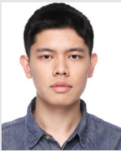

|  | Ph.D Candidate |
Hi everyone, my name is Wenxin Zhou. I was born in Shanghai, China in July 1998. Now I'm a Ph.D student of TongJi University. I received bachelor degree from Shanghai Maritime University in 2020. In September 2020, I came to TongJi University for pursuing master degree under the supervision of Prof. Xiaojun Wu.
In March 2022, I enrolled in the successive postgraduate and doctoral program of Tongji SEM (School of Economics and Management). My supervisior is Prof. Xiaolei Wang, who works on modeling and designing efficient algorithms for urban transportation and ridesharing and have published more than 20 papers on Transportation Science, Transportation Research Part B/C/E (until October 2022).
Major: Management Science and Engineering, School of Economics and Management
Supervisor: Prof. Xiaolei Wang
Major: Logistics Management, College of Transport and Communications